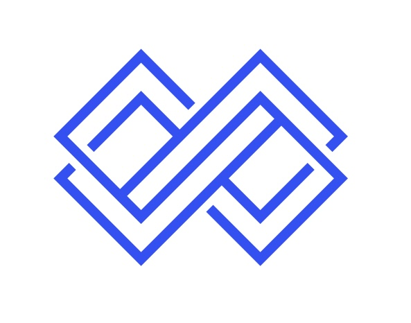

<!-- Footer -->
<footer class="footer">
    <div class="footer-content">
        <div class="footer-section">
            <div class="logo">
                <div class="logo-icon">
                    
                </div>
                <h3 class="multi-line-title">
                    <span class="title-main">声动丝路</span><br>
                    <span class="title-sub">面向海外受众的智能视频译制与文化伴读平台</span>
                </h3>
            </div>
            <p>Bridging languages, connecting cultures<br>架起语言桥梁，连接多元文化</p>
        </div>

        <div class="footer-section">
            <h4>Tools | 工具</h4>
            <ul class="footer-links">
                <li><a href="video.html">视频转译 | Video Translation</a></li>
                <li><a href="chat.html">习题模块 | Exercise Module</a></li>
                <li><a href="words.html">生词本收集 | Vocabulary</a></li>
            </ul>
        </div>

        <div class="footer-section">
            <h4>Connect | 联系我们</h4>
            <p>Join our community of language learners<br>加入我们的语言学习者社区</p>
            <div class="social-links">
                <a href="#" title="WeChat | 微信">💬</a>
                <a href="#" title="Weibo | 微博">📱</a>
                <a href="#" title="Instagram">📷</a>
                <a href="#" title="YouTube">▶️</a>
            </div>
        </div>
    </div>

    <div class="footer-bottom">
        <p>© 2023 声动丝路——面向海外受众的智能视频译制与文化伴读平台. All rights reserved.</p>
        <p>© 2023 声动丝路——面向海外受众的智能视频译制与文化伴读平台。保留所有权利。</p>
    </div>
</footer>